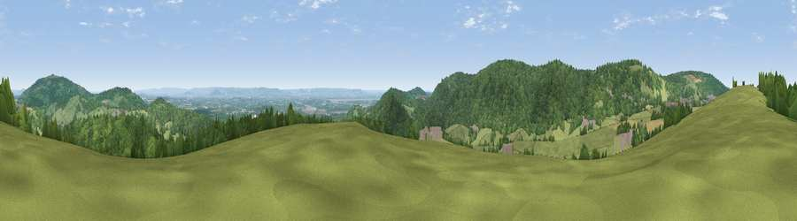

Viewpoint near Abenhall
#9326 in England · top 21% of its area beats it · near AbenhallWhere it is
The exact computed spot (SO 67725 17200). Click the marker for map links.
The view, rendered

A 360° render of this exact spot computed from the terrain model, tree cover and land cover — summer colours, afternoon light, calibrated against photographs of famous viewpoints. Real trees, hedges and buildings will differ in detail.
The panorama
Grey silhouette: terrain skyline in each direction (720 bearings, Earth curvature and refraction included). Dashed green: skyline with trees (+15 m) and buildings (+8 m) as obstacles. Blue strip: how far the ground is visible on each bearing.
Where the view opens
Wedge length = distance to the farthest visible ground on that bearing (vegetation-aware). Rings at 10, 25 and 50 km.
What fills the view
54% woodland · 38% grassland · 6% cropland · 2% built-up ·
Angular shares of the visible panorama (visual magnitude), not map area. Landscape diversity 0.42 (0–1 Shannon).
Key numbers
More beautiful places nearby
The staircase of upgrades: each row has a higher view potential than everything closer. Driving times are estimates from straight-line distance, calibrated against real road routing — check an actual route before setting out.
| Place | Direction | Drive | Score |
|---|---|---|---|
| Viewpoint near Mitcheldean | WNW · 2 km | ~5 min | 70.2 |
| Viewpoint near Huntley | ENE · 3 km | ~8 min | 75.0 |
| Viewpoint near May Hill | NNE · 4 km | ~10 min | 76.1 |
| Chase Wood Hill | NW · 9 km | ~18 min | 77.6 |
| Viewpoint near Whaddon | E · 16 km | ~29 min | 77.7 |
| Viewpoint near Woolhope | NNW · 17 km | ~30 min | 80.7 |
| Chase End Hill | NNE · 20 km | ~34 min | 81.5 |
| Ragged Stone Hill | NNE · 21 km | ~35 min | 82.5 |
51.85245, -2.46999 · source: screening · position refined by local search. Computed location — check access rights before visiting.